コンテンツ作成
編集を開始する
- 画面右上の 編集 をクリックします。
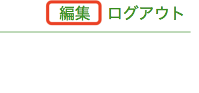
- 編集モードに入ります
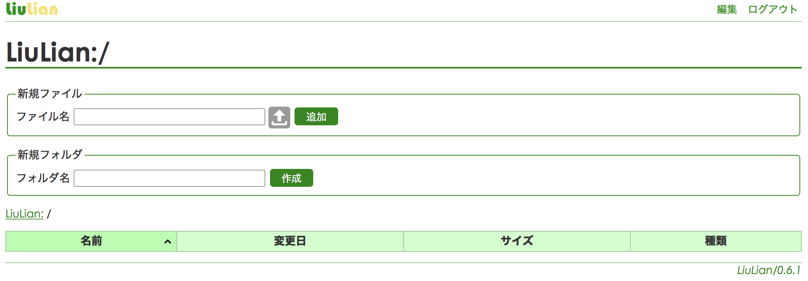
HTMLを編集する
- 新規ファイル の ファイル名 の欄にファイル名を入力し、追加 ボタンをクリックします。拡張子は html にしてください。
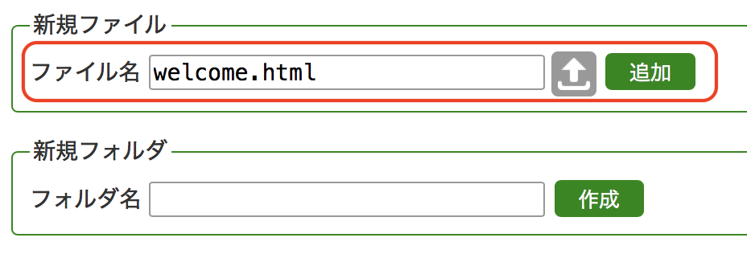
- テキスト入力フォームが表示されるので、HTMLを入力し、保存 ボタンをクリックします。
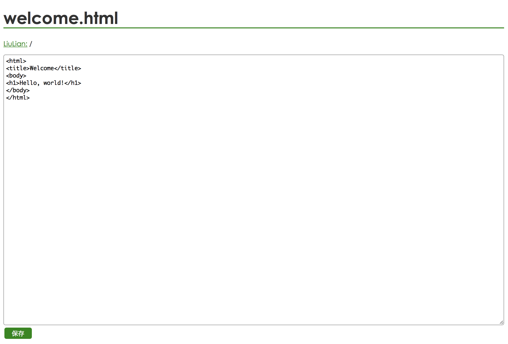
- フォルダ画面に戻ります。編集したHTMLファイルはフォルダに追加されています。
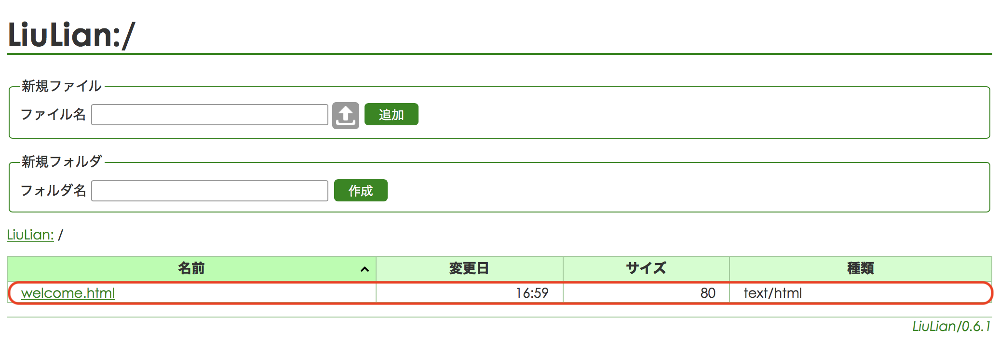
画像をアップロードする
- 新規ファイル のファイルアップロードのアイコンをクリックし、ブラウザのポップアップ画面からファイルを選択します。
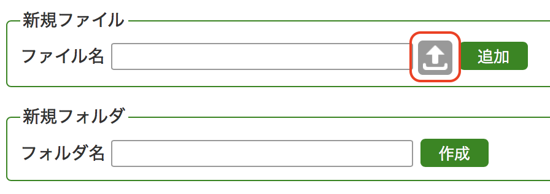
- ファイル名は自動入力されますが、変更することも可能です。
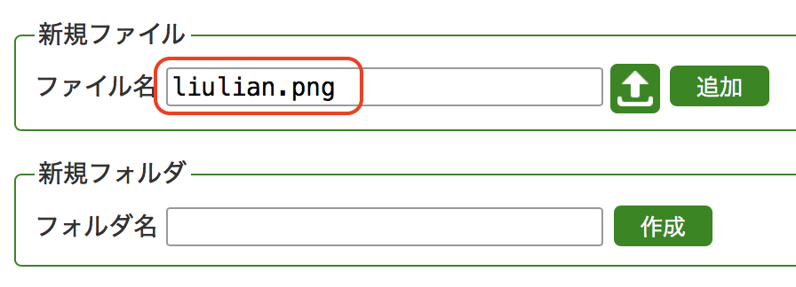
- 追加 ボタンをクリックします。
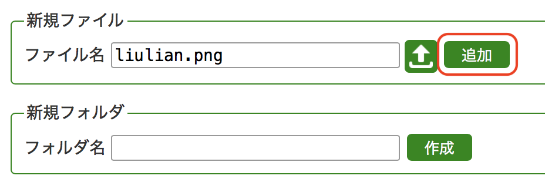
- フォルダ画面に戻ります。アップロードしたファイルはフォルダに追加されています。
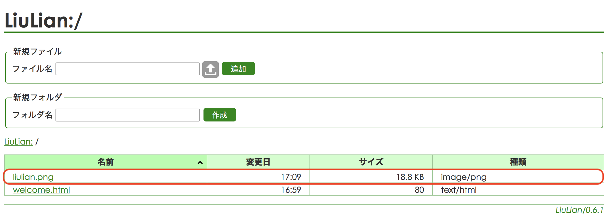
LiuLian記法を使う
- 拡張子のないファイル名を入力すると、LiuLian形式テキスト となります。
- LiuLian形式テキストでは LiuLian記法 が使えます。
Markdown記法を使う
- 拡張子を .md とすると Markdown 形式テキスト となります。
編集を終了する
- 画面右上の 編集 もしくはタイトルをクリックします。
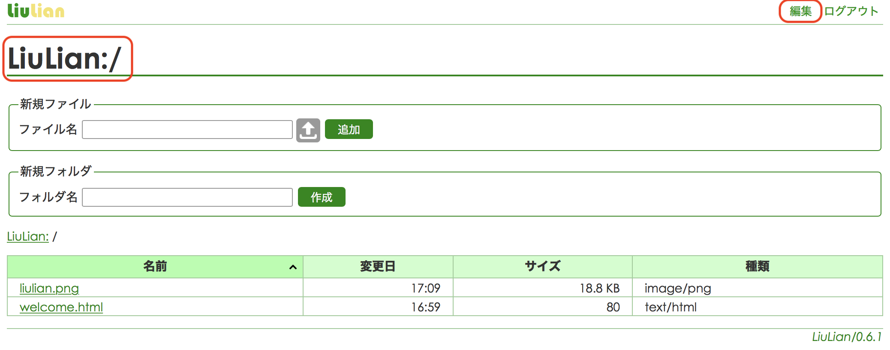
- 編集モードが終了し、通常のフォルダ画面に戻ります。
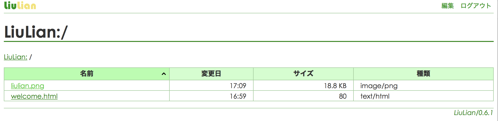
ログアウトする
- 画面右上の ログアウト をクリックします。
- ログアウトした状態ではフォルダ画面は表示されず、エラーとなります。これを避けるためには README ファイルを設定してください。
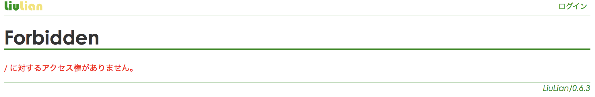